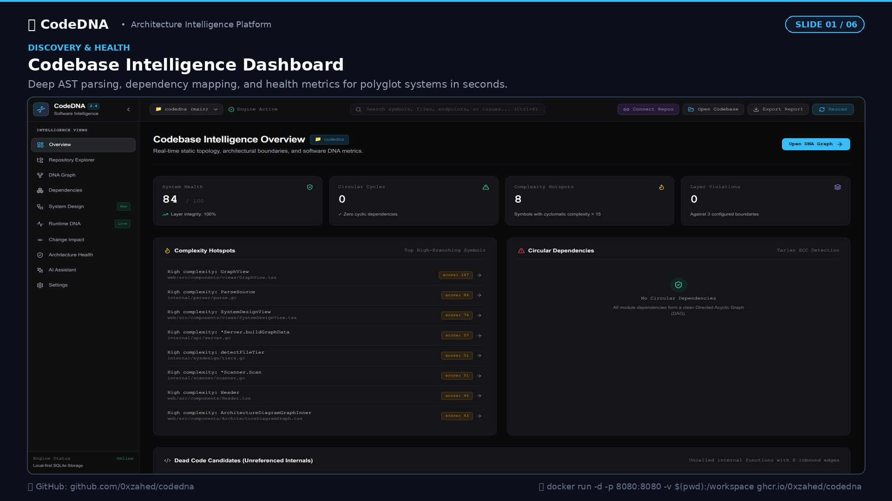
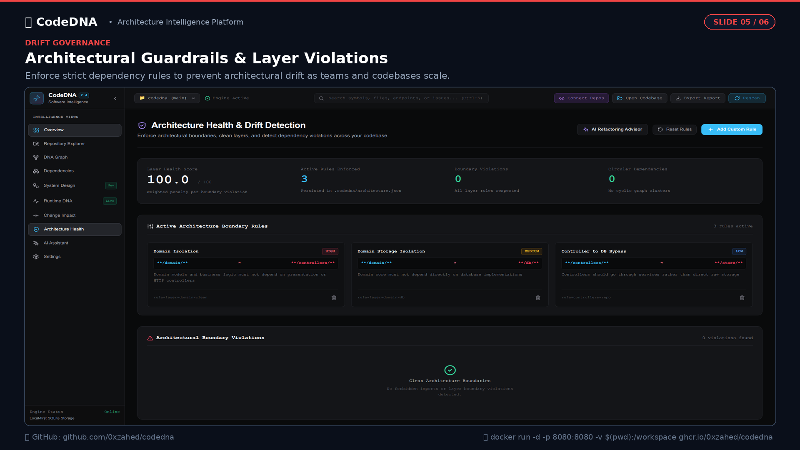

Reverse engineer any software repository into interactive topology. CodeDNA parses native Tree-sitter ASTs, visualizes function-to-function invocation graphs with active electron pulses, auto-classifies multi-tier system designs, and detects layer violations before pull requests merge.
Click each view below to see how CodeDNA turns static code into living architecture.

Deep AST parsing, dependency mapping, and health metrics for polyglot systems in seconds.
Standard static analyzers report lint errors. CodeDNA models the entire systemic architecture of your software.
Parses genuine Abstract Syntax Trees in parallel across Go, TypeScript, JavaScript, Python, Java, and PHP with zero regex approximations.
Function-to-function invocation paths visualized as dashed circuit traces with real-time electron pulses that show the exact flow of execution.
Auto-classifies files into Presentation, Application, Domain, and Infrastructure tiers with automated sequence data-flow hop maps.
Enforce Clean & Hexagonal Architecture rules. Detect illegal dependencies and run `codedna check` in CI/CD to block PRs with violations.
Analyzes Git diffs to calculate downstream impact scores and show exactly which APIs, services, and modules are affected before merge.
Zero cloud dependencies. Powered by embedded SQLite. Your intellectual property and proprietary source code never leave your machine.
Architectural rules are traditionally documented in static Confluence pages that get ignored. CodeDNA turns design guidelines into executable, testable assertions.

Whether you run Go microservices, TypeScript Next.js apps, or Python data pipelines, CodeDNA handles them unified.
Mount your current workspace directory directly into our container. Zero dependencies required.
Installs pre-compiled universal binaries (Apple Silicon / Intel & Linux x86_64) into your system PATH.
Once running, open your browser at: http://localhost:8080